NEBULA OS
Iniciando entorno gráfico Gamer & IA
Gamer
GAME MODE
Escritorio
00:00:00
·
sáb 1
HUD
0
80%
100%
NEBULA SYSTEM
00:00
uptime: 0m
Mes
2026
lu
ma
mi
ju
vi
sá
do
Nota rápida
Guardar
CENTRO DE CONTROL
Utilidades & Gaming
Estado, recursos y reproducción
WiFi
Bluetooth
Modo Juego
No molestar
VPN Shield
Gaming HUD
Alt+Z
Perfil:
Gamer
Streamer
Estudio
80%
100%
38%
RAM
24%
CPU
42%
Temp.
Bocanada
Gustavo Cerati
0:00
4:32
NEBULA NETWORK
Redes WiFi
Buscando redes cercanas...
Escaneando redes...
NEBULA BLUETOOTH
Dispositivos Bluetooth
Bluetooth desactivado
Bluetooth está desactivado
Activá Bluetooth para ver y emparejar dispositivos cercanos.
Dispositivos emparejados
Dispositivos disponibles
NEBULA NOTIFICATIONS
Centro de Notificaciones
Sin notificaciones nuevas
Todo tranquilo por acá
Las notificaciones del sistema aparecerán acá.
NEBULA HUD
GAMING PERFORMANCE HUB
Presioná
Alt
+
Z
o
Win
+
G
para alternar
Captura
Optimizar
Modo Juego: OFF
FPS TIEMPO REAL
144
ESTABLES · 144Hz G-SYNC
GPU (RTX 4080 SUPRIM)
Uso GPU
62%
VRAM
4.8 / 16 GB
Temperatura
57°C
CPU (Ryzen 9 7950X)
Uso CPU
35%
Frecuencia
4.20 GHz (Estándar)
RAM Sistema
12.5 / 32 GB (39%)
Bocanada
Gustavo Cerati
0:00 / 4:32
NEBULA WORKSPACES
Administrador de Escritorios
Cargando espacios de trabajo...
Esc
para cerrar
Ventanas del Space 1
No hay ventanas abiertas
Abrí una app desde el dock o el lanzador para verla acá.
Soltá para eliminar
La ventana se cerrará permanentemente
Abrir Terminal aquí
Abrir Archivos
Preguntar a Nova AI
Abrir Gaming Overlay (HUD)
Alternar Modo Juego
Nebula Designer (Personalizar)
Siguiente fondo de pantalla
Añadir Widget: Clima
Añadir Widget: Reloj Digital Flotante
Limpiar Widgets de Escritorio
Actualizar escritorio
NEBULA STORE
Tienda de Personalización
12 productos · 0 instalados
Todo
Temas
Widgets
Wallpapers
Apps
Juegos
Solo instalados
NEBULA AUDIO
Mezclador de Audio
Sin aplicaciones con audio
Master
Volumen general del sistema
80%
L
-∞ dB
R
-∞ dB
Aplicaciones
0
Dispositivo de salida